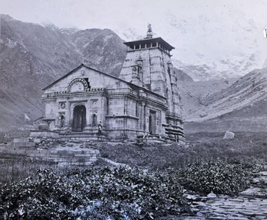

SHIV JI
Lord Shiva - the God of Almighty Powers - As we all know that teachings are important for human beings in their whole life. In short he is the entire galaxy or universe absorbed in the human beings. Everything that exist on earth comes from Lord Shiva and goes back to Shiva. Lord Shiva is perhaps the most complex of Hindu creator and one of the most powerful god who had so many names such as Mahadeva, Mahayogi, Pashupati, Nataraja, Bhairava, Vishwanath, Bhava, Bhole Nath. Planets, Moons, Suns, Stars, Planetary System, and entire Galaxies are just a small happening- a sprinkling. The rest is vast emptiness, nothingness. According to Hindu Mythology, Shiva is the Supreme Being who creates, protects and transforms the universe. Lord Shiva is the most important one in the Holy Trinity. Shiva is revered along with lord Vishnu and lord Brahma. A goddess is considered to be the energy and creative power (Shakti) of each, with maa Parvati the equal supportive partner of Shiva. Many believe that God Shiva is a Sayambhu – which means He is not born from a human body. He was created automatically! He was there when there was nothing and He will remain even after everything is destructed. That is why; he is also loving called as the 'Adi-Dev' which means the 'Oldest God of the Hindu mythology.
KEDARNATH TEMPLE
Kedarnath Dham, located in the Rudraprayag district of Uttarakhand, is one of the most paramount locations for worshipers of Shiva. The air appears to be reverberating with the name of Lord Shiva amid the mighty snow-clad peaks, enchanting meadows and forests of the lower mountain range of Himalayas. Situated in a breathtaking location, near the source of Mandakini River and at the height of 3,584 meters, Kedarnath Dham celebrates the greatness of Lord Shiva. Kedarnath temple is one of the 12 Jyotir Lingams and is also the most important temple among the Panch Kedars (group of 5 Shiva temples in Garhwal Himalayas). It is also one of the significant temples of the sacred Chota Char Dham Yatra in Uttarakhand, raising the glory of the place to further heights. The grand and impressive structure of Lord Shiva's shrine is made of grey stone. Steep climb stretching to 14 km from Gauri Kund brims with abundant beauty of nature. The paved and steep path gifts the pilgrims the fantastic views of snowy-peaks, alpine meadows and delightful forests of rhododendrons. A large stone statue of Nandi Bull stares at the shrine, guarding it, sitting right opposite it. There is one Garbha Griha which houses the primary idol (pyramid shaped rock) of Lord Shiva. The idols of Lord Krishna, Pandavas, Draupadi and Kunti find a space in the Mandapa section of the shrine.
LEGEND BEHIND THE KEDARNATH TEMPLE
Burdened with the guilt of killing their blood relatives, Pandavas sought Lord Shiva to absolve themselves of their sins. Shiva didn't want to release them from their wrongdoings so easily and disguised himself as a bull to roam in Garhwal Himalayas. On being discovered by Pandavas, Shiva dived into the ground. Bhim tried to catch him and could only get hold of the hump. Other body parts of Shiva (in the form of bull), came up at different places. Hump of the bull was found in Kedarnath, navel emerged at Madhya-Maheshwar, two forelegs appeared at Tunganath, face in Rudranath, and hair came up at Kalpeshwar. Together these five sacred places are called Panch Kedar. It is believed that originally Pandavas built the temple of Kedarnath; the present temple was established by Adi Shankaracharya who restored and revived the glory of the shrine. In the temple complex, to the south side, there is another ancient and important temple. It is dedicated to Bhairav Nath, who is believed to be the one who guards the temple compound when the shrine is closed in the winter season. there are thousant of peoples come to see the opening program of kedarnath temple. tons of flower are used to decorate the temple. It is very beautiful to see.
HOW TO REACH KEDARNATH DHAM?

ROUTE
Delhi - Haridwar - Rishikesh-Devprayag - Srinagar - Rudraprayag - Tilwara - Agastamuni - Kund - Guptkashi - Phata - Rampur - Sonprayag - Gaurikund - Trek to Kedarnath
Travel Kedarnath by Air
BY AIR:
Jolly Grant airport on Rishikesh-Dehradun road is the nearest airport to Kedarnath. Hire a taxi to Gaurikund or till Haridwar/Rishikesh.
Travel Kedarnath by Rail
BY TRAIN:
Regular trains from Delhi to Haridwar and Dehradun are available at all times of the year. Hire a cab or get a bus from here.
Travel Kedarnath by Roadways
BY BUS:
Gaurikund is connected with motorable roads, and buses and taxis from important destinations like Rishikesh, Dehradun, Uttarkashi and Tehri, Pauri and Chamoli are easily available.